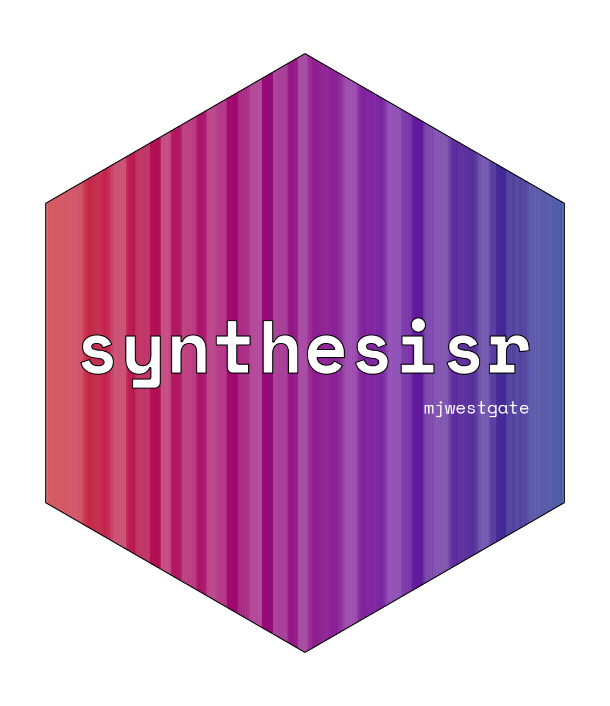

Calculate similarity between two strings
string_.RdThese functions each access a specific "methods" argument
provided by stringdist, and are provided for convenient calling by
find_duplicates(). They do not include any new functionality beyond that
given by stringdist, which you should use for your own analyses.